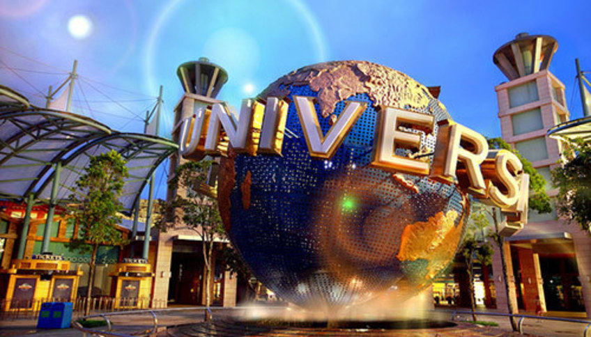

Лос-Анджелес
Лос-А́нджелес— город в США на юге штата Калифорния, находящийся на берегу Тихого океана. Крупнейший по численности населения в штате и второй — в стране (на 1 июля 2009 года — 3 831 868 жителей). Город является административным центром одноимённого округа, а также центром Большого Лос-Анджелеса — агломерации с населением более 17 млн человек. Жителей Лос-Анджелеса называют «Angelenos».
На прибрежных территориях, занимаемых сейчас Лос-Анджелесом, в XVI веке жили индейцы тонгва и чумаши. Первым европейцем, приставшим к берегу в районе нынешнего Лос-Анджелеса в 1542 году на двух кораблях «Сан Сальвадор» и «Ла Виктория» (водоизмещением 50 тонн каждое), стал мореплаватель Хуан Родригес Кабрильо (лоцманом и заместителем его был Бартоломео Феррело). Отплыв из Ла Навидад (Мексика) 27 июля 1542 года, Кабрильо высадился в бухте Сан Диего 28 сентября. В то время на берегу существовала индейская деревня Янг-На. Сам первооткрыватель умер 3 января 1543 года и похоронен на острове Сан-Мигель, названном впоследствии его именем «Хуан Родригес» (Juan Rodríguez). О своём плавании Родригес Кабрильо записал в журнале, который привёз его лоцман, и теперь он хранится в одном из архивов Севильи (Испания).Лос-Анджелес является одним из крупнейших мировых культурных, научных, экономических, образовательных центров. Также город — один из крупнейших мировых центров индустрии развлечений в сфере кино, театра, музыки, литературы и телевидения.
Universal-studio
Universal Pictures
одна из старейших из ныне существующих голливудских киностудий. Основана Карлом Леммле в 1912 году. С 1915 по 1925 год — крупнейшая из кинокомпаний США. С 2004 года — производственное подразделение компании NBC Universal. На логотипе изображён Земной шар, вокруг которого вращается подобие колец Сатурна с надписью: Universal («Вселенная»). Под эгидой компании работают тематические парки в Голливуде, Орландо, Сингапуре и Осаке.Hollywood

Hollywood
Знак Голливуда — памятный знак на Голливудских холмах в Лос-Анджелесе, Калифорния. Представляет собой слово «HOLLYWOOD», написанное большими белыми буквами. Знак был создан в качестве рекламы в 1923 году, но впоследствии приобрёл широкую известность, став фирменным знаком киноиндустрии США. Расположен на южном склоне холма Маунт Ли на высоте 491 м над уровнем моря. За свою историю Знак Голливуда часто служил целью различных шуток и вандализма, был реставрирован и поставлен под охрану с помощью современной системы безопасности. Знак часто появляется в различных фильмах и телевизионных программах, снимающихся в Голливуде или недалеко от него. Знаки подобного стиля, но с другими названиями, часто появляются в пародиях
Аллея славы
Голливудская «Аллея славы»
Голливудская «Аллея славы» — ряд тротуаров по обеим сторонам улицы на протяжении пятнадцати кварталов на Голливудском бульваре и на протяжении трёх кварталов на Вайн-стрит, в Голливуде, Лос-Анджелес, Калифорния, США, которые служат постоянным и общественным памятником достижений в индустрии развлечений. Более чем 2500 пятиконечных медных Звёзд вмонтированы в террацовые плиты тротуара. «Аллея славы» представлена именами актёров, музыкантов, продюсеров, директоров музыкальных и театральных групп, вымышленных и реальных персонажей, и многих других за их вклад в индустрию развлечения и искусства. «Аллеей славы» управляет Голливудская торговая палата, и её финансирует Hollywood Historic Trust. Согласно сообщениям фирмы, изучающей рыночную конъюнктуру, по исследованиям NPO/Plog, «Аллея славы» привлекает около 10 миллионов посетителей ежегодно. Это больше, чем Китайский театр Граумана, судно «Королева Мэри» и Музей искусств округа Лос-Анджелес. Также она играет важную роль в развитии городского туризма.